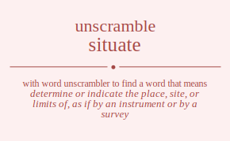

The word found after unscrambling situate means that determine or indicate the place, site, or limits of, as if by an instrument or by a survey, put (something somewhere) firmly, .

The word found after unscrambling situate means that determine or indicate the place, site, or limits of, as if by an instrument or by a survey, put (something somewhere) firmly, .
You can also find solutions for different combinations of letters in situate like situate situaet situtae situtea situeat situeta sitaute sitauet sitatue sitateu sitaeut sitaetu sittuae sittuea sittaue sittaeu sitteua sitteau siteuat siteuta siteaut siteatu sitetua sitetau siutate siutaet siuttae siuttea siuteat siuteta siuatte siuatet siuatte siuatet siuaett siuaett siuttae siuttea siutate siutaet siuteta siuteat siuetat siuetta siueatt siueatt siuetta siuetat siatute siatuet siattue siatteu siateut siatetu siautte siautet siautte siautet siauett siauett siattue siatteu siatute siatuet siatetu siateut siaetut siaettu siaeutt siaeutt siaettu siaetut sittuae sittuea sittaue sittaeu sitteua sitteau situtae situtea situate situaet situeta situeat sitatue sitateu sitaute sitauet sitaetu sitaeut sitetua sitetau siteuta siteuat siteatu siteaut sietuat sietuta sietaut sietatu siettua siettau sieutat sieutta sieuatt sieuatt sieutta sieutat sieatut sieattu sieautt sieautt sieattu sieatut siettua siettau sietuta sietuat sietatu sietaut stiuate stiuaet stiutae stiutea stiueat stiueta stiaute stiauet stiatue stiateu stiaeut stiaetu stituae stituea stitaue stitaeu stiteua stiteau stieuat stieuta stieaut stieatu stietua stietau stuiate stuiaet stuitae stuitea stuieat stuieta stuaite stuaiet stuatie stuatei stuaeit stuaeti stutiae stutiea stutaie stutaei stuteia stuteai stueiat stueita stueait stueati stuetia stuetai staiute staiuet staitue staiteu staieut staietu stauite stauiet stautie stautei staueit staueti statiue statieu statuie statuei stateiu stateui staeiut staeitu staeuit staeuti staetiu staetui sttiuae sttiuea sttiaue sttiaeu sttieua sttieau sttuiae sttuiea sttuaie sttuaei sttueia sttueai sttaiue sttaieu sttauie sttauei sttaeiu sttaeui stteiua stteiau stteuia stteuai stteaiu stteaui steiuat steiuta steiaut steiatu steitua steitau steuiat steuita steuait steuati steutia steutai steaiut steaitu steauit steauti steatiu steatui stetiua stetiau stetuia stetuai stetaiu stetaui suitate suitaet suittae suittea suiteat suiteta suiatte suiatet suiatte suiatet suiaett suiaett suittae suittea suitate suitaet suiteta suiteat suietat suietta suieatt suieatt suietta suietat sutiate sutiaet sutitae sutitea sutieat sutieta sutaite sutaiet sutatie sutatei sutaeit sutaeti suttiae suttiea suttaie suttaei sutteia sutteai suteiat suteita suteait suteati sutetia sutetai suaitte suaitet suaitte suaitet suaiett suaiett suatite suatiet suattie suattei suateit suateti suatite suatiet suattie suattei suateit suateti suaeitt suaeitt suaetit suaetti suaetit suaetti sutitae sutitea sutiate sutiaet sutieta sutieat suttiae suttiea suttaie suttaei sutteia sutteai sutaite sutaiet sutatie sutatei sutaeit sutaeti suteita suteiat sutetia sutetai suteait suteati sueitat sueitta sueiatt sueiatt sueitta sueitat suetiat suetita suetait suetati suettia suettai sueaitt sueaitt sueatit sueatti sueatit sueatti suetita suetiat suettia suettai suetait suetati saitute saituet saittue saitteu saiteut saitetu saiutte saiutet saiutte saiutet saiuett saiuett saittue saitteu saitute saituet saitetu saiteut saietut saiettu saieutt saieutt saiettu saietut satiute satiuet satitue satiteu satieut satietu satuite satuiet satutie satutei satueit satueti sattiue sattieu sattuie sattuei satteiu satteui sateiut sateitu sateuit sateuti satetiu satetui sauitte sauitet sauitte sauitet sauiett sauiett sautite sautiet sauttie sauttei sauteit sauteti sautite sautiet sauttie sauttei sauteit sauteti saueitt saueitt sauetit sauetti sauetit sauetti satitue satiteu satiute satiuet satietu satieut sattiue sattieu sattuie sattuei satteiu satteui satuite satuiet satutie satutei satueit satueti sateitu sateiut satetiu satetui sateuit sateuti saeitut saeittu saeiutt saeiutt saeittu saeitut saetiut saetitu saetuit saetuti saettiu saettui saeuitt saeuitt saeutit saeutti saeutit saeutti saetitu saetiut saettiu saettui saetuit saetuti stituae stituea stitaue stitaeu stiteua stiteau stiutae stiutea stiuate stiuaet stiueta stiueat stiatue stiateu stiaute stiauet stiaetu stiaeut stietua stietau stieuta stieuat stieatu stieaut sttiuae sttiuea sttiaue sttiaeu sttieua sttieau sttuiae sttuiea sttuaie sttuaei sttueia sttueai sttaiue sttaieu sttauie sttauei sttaeiu sttaeui stteiua stteiau stteuia stteuai stteaiu stteaui stuitae stuitea stuiate stuiaet stuieta stuieat stutiae stutiea stutaie stutaei stuteia stuteai stuaite stuaiet stuatie stuatei stuaeit stuaeti stueita stueiat stuetia stuetai stueait stueati staitue staiteu staiute staiuet staietu staieut statiue statieu statuie statuei stateiu stateui stauite stauiet stautie stautei staueit staueti staeitu staeiut staetiu staetui staeuit staeuti steitua steitau steiuta steiuat steiatu steiaut stetiua stetiau stetuia stetuai stetaiu stetaui steuita steuiat steutia steutai steuait steuati steaitu steaiut steatiu steatui steauit steauti seituat seituta seitaut seitatu seittua seittau seiutat seiutta seiuatt seiuatt seiutta seiutat seiatut seiattu seiautt seiautt seiattu seiatut seittua seittau seituta seituat seitatu seitaut setiuat setiuta setiaut setiatu setitua setitau setuiat setuita setuait setuati setutia setutai setaiut setaitu setauit setauti setatiu setatui settiua settiau settuia settuai settaiu settaui seuitat seuitta seuiatt seuiatt seuitta seuitat seutiat seutita seutait seutati seuttia seuttai seuaitt seuaitt seuatit seuatti seuatit seuatti seutita seutiat seuttia seuttai seutait seutati seaitut seaittu seaiutt seaiutt seaittu seaitut seatiut seatitu seatuit seatuti seattiu seattui seauitt seauitt seautit seautti seautit seautti seatitu seatiut seattiu seattui seatuit seatuti setitua setitau setiuta setiuat setiatu setiaut settiua settiau settuia settuai settaiu settaui setuita setuiat setutia setutai setuait setuati setaitu setaiut setatiu setatui setauit setauti istuate istuaet istutae istutea istueat istueta istaute istauet istatue istateu istaeut istaetu isttuae isttuea isttaue isttaeu istteua istteau isteuat isteuta isteaut isteatu istetua istetau isutate isutaet isuttae isuttea isuteat isuteta isuatte isuatet isuatte isuatet isuaett isuaett isuttae isuttea isutate isutaet isuteta isuteat isuetat isuetta isueatt isueatt isuetta isuetat isatute isatuet isattue isatteu isateut isatetu isautte isautet isautte isautet isauett isauett isattue isatteu isatute isatuet isatetu isateut isaetut isaettu isaeutt isaeutt isaettu isaetut isttuae isttuea isttaue isttaeu istteua istteau istutae istutea istuate istuaet istueta istueat istatue istateu istaute istauet istaetu istaeut istetua istetau isteuta isteuat isteatu isteaut isetuat isetuta isetaut isetatu isettua isettau iseutat iseutta iseuatt iseuatt iseutta iseutat iseatut iseattu iseautt iseautt iseattu iseatut isettua isettau isetuta isetuat isetatu isetaut itsuate itsuaet itsutae itsutea itsueat itsueta itsaute itsauet itsatue itsateu itsaeut itsaetu itstuae itstuea itstaue itstaeu itsteua itsteau itseuat itseuta itseaut itseatu itsetua itsetau itusate itusaet itustae itustea ituseat ituseta ituaste ituaset ituatse ituates ituaest ituaets itutsae itutsea itutase itutaes itutesa ituteas ituesat ituesta itueast itueats ituetsa ituetas itasute itasuet itastue itasteu itaseut itasetu itauste itauset itautse itautes itauest itauets itatsue itatseu itatuse itatues itatesu itateus itaesut itaestu itaeust itaeuts itaetsu itaetus ittsuae ittsuea ittsaue ittsaeu ittseua ittseau ittusae ittusea ittuase ittuaes ittuesa ittueas ittasue ittaseu ittause ittaues ittaesu ittaeus ittesua ittesau itteusa itteuas itteasu itteaus itesuat itesuta itesaut itesatu itestua itestau iteusat iteusta iteuast iteuats iteutsa iteutas iteasut iteastu iteaust iteauts iteatsu iteatus itetsua itetsau itetusa itetuas itetasu itetaus iustate iustaet iusttae iusttea iusteat iusteta iusatte iusatet iusatte iusatet iusaett iusaett iusttae iusttea iustate iustaet iusteta iusteat iusetat iusetta iuseatt iuseatt iusetta iusetat iutsate iutsaet iutstae iutstea iutseat iutseta iutaste iutaset iutatse iutates iutaest iutaets iuttsae iuttsea iuttase iuttaes iuttesa iutteas iutesat iutesta iuteast iuteats iutetsa iutetas iuastte iuastet iuastte iuastet iuasett iuasett iuatste iuatset iuattse iuattes iuatest iuatets iuatste iuatset iuattse iuattes iuatest iuatets iuaestt iuaestt iuaetst iuaetts iuaetst iuaetts iutstae iutstea iutsate iutsaet iutseta iutseat iuttsae iuttsea iuttase iuttaes iuttesa iutteas iutaste iutaset iutatse iutates iutaest iutaets iutesta iutesat iutetsa iutetas iuteast iuteats iuestat iuestta iuesatt iuesatt iuestta iuestat iuetsat iuetsta iuetast iuetats iuettsa iuettas iueastt iueastt iueatst iueatts iueatst iueatts iuetsta iuetsat iuettsa iuettas iuetast iuetats iastute iastuet iasttue iastteu iasteut iastetu iasutte iasutet iasutte iasutet iasuett iasuett iasttue iastteu iastute iastuet iastetu iasteut iasetut iasettu iaseutt iaseutt iasettu iasetut iatsute iatsuet iatstue iatsteu iatseut iatsetu iatuste iatuset iatutse iatutes iatuest iatuets iattsue iattseu iattuse iattues iattesu iatteus iatesut iatestu iateust iateuts iatetsu iatetus iaustte iaustet iaustte iaustet iausett iausett iautste iautset iauttse iauttes iautest iautets iautste iautset iauttse iauttes iautest iautets iauestt iauestt iauetst iauetts iauetst iauetts iatstue iatsteu iatsute iatsuet iatsetu iatseut iattsue iattseu iattuse iattues iattesu iatteus iatuste iatuset iatutse iatutes iatuest iatuets iatestu iatesut iatetsu iatetus iateust iateuts iaestut iaesttu iaesutt iaesutt iaesttu iaestut iaetsut iaetstu iaetust iaetuts iaettsu iaettus iaeustt iaeustt iaeutst iaeutts iaeutst iaeutts iaetstu iaetsut iaettsu iaettus iaetust iaetuts itstuae itstuea itstaue itstaeu itsteua itsteau itsutae itsutea itsuate itsuaet itsueta itsueat itsatue itsateu itsaute itsauet itsaetu itsaeut itsetua itsetau itseuta itseuat itseatu itseaut ittsuae ittsuea ittsaue ittsaeu ittseua ittseau ittusae ittusea ittuase ittuaes ittuesa ittueas ittasue ittaseu ittause ittaues ittaesu ittaeus ittesua ittesau itteusa itteuas itteasu itteaus itustae itustea itusate itusaet ituseta ituseat itutsae itutsea itutase itutaes itutesa ituteas ituaste ituaset ituatse ituates ituaest ituaets ituesta ituesat ituetsa ituetas itueast itueats itastue itasteu itasute itasuet itasetu itaseut itatsue itatseu itatuse itatues itatesu itateus itauste itauset itautse itautes itauest itauets itaestu itaesut itaetsu itaetus itaeust itaeuts itestua itestau itesuta itesuat itesatu itesaut itetsua itetsau itetusa itetuas itetasu itetaus iteusta iteusat iteutsa iteutas iteuast iteuats iteastu iteasut iteatsu iteatus iteaust iteauts iestuat iestuta iestaut iestatu iesttua iesttau iesutat iesutta iesuatt iesuatt iesutta iesutat iesatut iesattu iesautt iesautt iesattu iesatut iesttua iesttau iestuta iestuat iestatu iestaut ietsuat ietsuta ietsaut ietsatu ietstua ietstau ietusat ietusta ietuast ietuats ietutsa ietutas ietasut ietastu ietaust ietauts ietatsu ietatus iettsua iettsau iettusa iettuas iettasu iettaus ieustat ieustta ieusatt ieusatt ieustta ieustat ieutsat ieutsta ieutast ieutats ieuttsa ieuttas ieuastt ieuastt ieuatst ieuatts ieuatst ieuatts ieutsta ieutsat ieuttsa ieuttas ieutast ieutats ieastut ieasttu ieasutt ieasutt ieasttu ieastut ieatsut ieatstu ieatust ieatuts ieattsu ieattus ieaustt ieaustt ieautst ieautts ieautst ieautts ieatstu ieatsut ieattsu ieattus ieatust ieatuts ietstua ietstau ietsuta ietsuat ietsatu ietsaut iettsua iettsau iettusa iettuas iettasu iettaus ietusta ietusat ietutsa ietutas ietuast ietuats ietastu ietasut ietatsu ietatus ietaust ietauts tsiuate tsiuaet tsiutae tsiutea tsiueat tsiueta tsiaute tsiauet tsiatue tsiateu tsiaeut tsiaetu tsituae tsituea tsitaue tsitaeu tsiteua tsiteau tsieuat tsieuta tsieaut tsieatu tsietua tsietau tsuiate tsuiaet tsuitae tsuitea tsuieat tsuieta tsuaite tsuaiet tsuatie tsuatei tsuaeit tsuaeti tsutiae tsutiea tsutaie tsutaei tsuteia tsuteai tsueiat tsueita tsueait tsueati tsuetia tsuetai tsaiute tsaiuet tsaitue tsaiteu tsaieut tsaietu tsauite tsauiet tsautie tsautei tsaueit tsaueti tsatiue tsatieu tsatuie tsatuei tsateiu tsateui tsaeiut tsaeitu tsaeuit tsaeuti tsaetiu tsaetui tstiuae tstiuea tstiaue tstiaeu tstieua tstieau tstuiae tstuiea tstuaie tstuaei tstueia tstueai tstaiue tstaieu tstauie tstauei tstaeiu tstaeui tsteiua tsteiau tsteuia tsteuai tsteaiu tsteaui tseiuat tseiuta tseiaut tseiatu tseitua tseitau tseuiat tseuita tseuait tseuati tseutia tseutai tseaiut tseaitu tseauit tseauti tseatiu tseatui tsetiua tsetiau tsetuia tsetuai tsetaiu tsetaui tisuate tisuaet tisutae tisutea tisueat tisueta tisaute tisauet tisatue tisateu tisaeut tisaetu tistuae tistuea tistaue tistaeu tisteua tisteau tiseuat tiseuta tiseaut tiseatu tisetua tisetau tiusate tiusaet tiustae tiustea tiuseat tiuseta tiuaste tiuaset tiuatse tiuates tiuaest tiuaets tiutsae tiutsea tiutase tiutaes tiutesa tiuteas tiuesat tiuesta tiueast tiueats tiuetsa tiuetas tiasute tiasuet tiastue tiasteu tiaseut tiasetu tiauste tiauset tiautse tiautes tiauest tiauets tiatsue tiatseu tiatuse tiatues tiatesu tiateus tiaesut tiaestu tiaeust tiaeuts tiaetsu tiaetus titsuae titsuea titsaue titsaeu titseua titseau titusae titusea tituase tituaes tituesa titueas titasue titaseu titause titaues titaesu titaeus titesua titesau titeusa titeuas titeasu titeaus tiesuat tiesuta tiesaut tiesatu tiestua tiestau tieusat tieusta tieuast tieuats tieutsa tieutas tieasut tieastu tieaust tieauts tieatsu tieatus tietsua tietsau tietusa tietuas tietasu tietaus tusiate tusiaet tusitae tusitea tusieat tusieta tusaite tusaiet tusatie tusatei tusaeit tusaeti tustiae tustiea tustaie tustaei tusteia tusteai tuseiat tuseita tuseait tuseati tusetia tusetai tuisate tuisaet tuistae tuistea tuiseat tuiseta tuiaste tuiaset tuiatse tuiates tuiaest tuiaets tuitsae tuitsea tuitase tuitaes tuitesa tuiteas tuiesat tuiesta tuieast tuieats tuietsa tuietas tuasite tuasiet tuastie tuastei tuaseit tuaseti tuaiste tuaiset tuaitse tuaites tuaiest tuaiets tuatsie tuatsei tuatise tuaties tuatesi tuateis tuaesit tuaesti tuaeist tuaeits tuaetsi tuaetis tutsiae tutsiea tutsaie tutsaei tutseia tutseai tutisae tutisea tutiase tutiaes tutiesa tutieas tutasie tutasei tutaise tutaies tutaesi tutaeis tutesia tutesai tuteisa tuteias tuteasi tuteais tuesiat tuesita tuesait tuesati tuestia tuestai tueisat tueista tueiast tueiats tueitsa tueitas tueasit tueasti tueaist tueaits tueatsi tueatis tuetsia tuetsai tuetisa tuetias tuetasi tuetais tasiute tasiuet tasitue tasiteu tasieut tasietu tasuite tasuiet tasutie tasutei tasueit tasueti tastiue tastieu tastuie tastuei tasteiu tasteui taseiut taseitu taseuit taseuti tasetiu tasetui taisute taisuet taistue taisteu taiseut taisetu taiuste taiuset taiutse taiutes taiuest taiuets taitsue taitseu taituse taitues taitesu taiteus taiesut taiestu taieust taieuts taietsu taietus tausite tausiet taustie taustei tauseit tauseti tauiste tauiset tauitse tauites tauiest tauiets tautsie tautsei tautise tauties tautesi tauteis tauesit tauesti taueist taueits tauetsi tauetis tatsiue tatsieu tatsuie tatsuei tatseiu tatseui tatisue tatiseu tatiuse tatiues tatiesu tatieus tatusie tatusei tatuise tatuies tatuesi tatueis tatesiu tatesui tateisu tateius tateusi tateuis taesiut taesitu taesuit taesuti taestiu taestui taeisut taeistu taeiust taeiuts taeitsu taeitus taeusit taeusti taeuist taeuits taeutsi taeutis taetsiu taetsui taetisu taetius taetusi taetuis ttsiuae ttsiuea ttsiaue ttsiaeu ttsieua ttsieau ttsuiae ttsuiea ttsuaie ttsuaei ttsueia ttsueai ttsaiue ttsaieu ttsauie ttsauei ttsaeiu ttsaeui ttseiua ttseiau ttseuia ttseuai ttseaiu ttseaui ttisuae ttisuea ttisaue ttisaeu ttiseua ttiseau ttiusae ttiusea ttiuase ttiuaes ttiuesa ttiueas ttiasue ttiaseu ttiause ttiaues ttiaesu ttiaeus ttiesua ttiesau ttieusa ttieuas ttieasu ttieaus ttusiae ttusiea ttusaie ttusaei ttuseia ttuseai ttuisae ttuisea ttuiase ttuiaes ttuiesa ttuieas ttuasie ttuasei ttuaise ttuaies ttuaesi ttuaeis ttuesia ttuesai ttueisa ttueias ttueasi ttueais ttasiue ttasieu ttasuie ttasuei ttaseiu ttaseui ttaisue ttaiseu ttaiuse ttaiues ttaiesu ttaieus ttausie ttausei ttauise ttauies ttauesi ttaueis ttaesiu ttaesui ttaeisu ttaeius ttaeusi ttaeuis ttesiua ttesiau ttesuia ttesuai ttesaiu ttesaui tteisua tteisau tteiusa tteiuas tteiasu tteiaus tteusia tteusai tteuisa tteuias tteuasi tteuais tteasiu tteasui tteaisu tteaius tteausi tteauis tesiuat tesiuta tesiaut tesiatu tesitua tesitau tesuiat tesuita tesuait tesuati tesutia tesutai tesaiut tesaitu tesauit tesauti tesatiu tesatui testiua testiau testuia testuai testaiu testaui teisuat teisuta teisaut teisatu teistua teistau teiusat teiusta teiuast teiuats teiutsa teiutas teiasut teiastu teiaust teiauts teiatsu teiatus teitsua teitsau teitusa teituas teitasu teitaus teusiat teusita teusait teusati teustia teustai teuisat teuista teuiast teuiats teuitsa teuitas teuasit teuasti teuaist teuaits teuatsi teuatis teutsia teutsai teutisa teutias teutasi teutais teasiut teasitu teasuit teasuti teastiu teastui teaisut teaistu teaiust teaiuts teaitsu teaitus teausit teausti teauist teauits teautsi teautis teatsiu teatsui teatisu teatius teatusi teatuis tetsiua tetsiau tetsuia tetsuai tetsaiu tetsaui tetisua tetisau tetiusa tetiuas tetiasu tetiaus tetusia tetusai tetuisa tetuias tetuasi tetuais tetasiu tetasui tetaisu tetaius tetausi tetauis usitate usitaet usittae usittea usiteat usiteta usiatte usiatet usiatte usiatet usiaett usiaett usittae usittea usitate usitaet usiteta usiteat usietat usietta usieatt usieatt usietta usietat ustiate ustiaet ustitae ustitea ustieat ustieta ustaite ustaiet ustatie ustatei ustaeit ustaeti usttiae usttiea usttaie usttaei ustteia ustteai usteiat usteita usteait usteati ustetia ustetai usaitte usaitet usaitte usaitet usaiett usaiett usatite usatiet usattie usattei usateit usateti usatite usatiet usattie usattei usateit usateti usaeitt usaeitt usaetit usaetti usaetit usaetti ustitae ustitea ustiate ustiaet ustieta ustieat usttiae usttiea usttaie usttaei ustteia ustteai ustaite ustaiet ustatie ustatei ustaeit ustaeti usteita usteiat ustetia ustetai usteait usteati useitat useitta useiatt useiatt useitta useitat usetiat usetita usetait usetati usettia usettai useaitt useaitt useatit useatti useatit useatti usetita usetiat usettia usettai usetait usetati uistate uistaet uisttae uisttea uisteat uisteta uisatte uisatet uisatte uisatet uisaett uisaett uisttae uisttea uistate uistaet uisteta uisteat uisetat uisetta uiseatt uiseatt uisetta uisetat uitsate uitsaet uitstae uitstea uitseat uitseta uitaste uitaset uitatse uitates uitaest uitaets uittsae uittsea uittase uittaes uittesa uitteas uitesat uitesta uiteast uiteats uitetsa uitetas uiastte uiastet uiastte uiastet uiasett uiasett uiatste uiatset uiattse uiattes uiatest uiatets uiatste uiatset uiattse uiattes uiatest uiatets uiaestt uiaestt uiaetst uiaetts uiaetst uiaetts uitstae uitstea uitsate uitsaet uitseta uitseat uittsae uittsea uittase uittaes uittesa uitteas uitaste uitaset uitatse uitates uitaest uitaets uitesta uitesat uitetsa uitetas uiteast uiteats uiestat uiestta uiesatt uiesatt uiestta uiestat uietsat uietsta uietast uietats uiettsa uiettas uieastt uieastt uieatst uieatts uieatst uieatts uietsta uietsat uiettsa uiettas uietast uietats utsiate utsiaet utsitae utsitea utsieat utsieta utsaite utsaiet utsatie utsatei utsaeit utsaeti utstiae utstiea utstaie utstaei utsteia utsteai utseiat utseita utseait utseati utsetia utsetai utisate utisaet utistae utistea utiseat utiseta utiaste utiaset utiatse utiates utiaest utiaets utitsae utitsea utitase utitaes utitesa utiteas utiesat utiesta utieast utieats utietsa utietas utasite utasiet utastie utastei utaseit utaseti utaiste utaiset utaitse utaites utaiest utaiets utatsie utatsei utatise utaties utatesi utateis utaesit utaesti utaeist utaeits utaetsi utaetis uttsiae uttsiea uttsaie uttsaei uttseia uttseai uttisae uttisea uttiase uttiaes uttiesa uttieas uttasie uttasei uttaise uttaies uttaesi uttaeis uttesia uttesai utteisa utteias utteasi utteais utesiat utesita utesait utesati utestia utestai uteisat uteista uteiast uteiats uteitsa uteitas uteasit uteasti uteaist uteaits uteatsi uteatis utetsia utetsai utetisa utetias utetasi utetais uasitte uasitet uasitte uasitet uasiett uasiett uastite uastiet uasttie uasttei uasteit uasteti uastite uastiet uasttie uasttei uasteit uasteti uaseitt uaseitt uasetit uasetti uasetit uasetti uaistte uaistet uaistte uaistet uaisett uaisett uaitste uaitset uaittse uaittes uaitest uaitets uaitste uaitset uaittse uaittes uaitest uaitets uaiestt uaiestt uaietst uaietts uaietst uaietts uatsite uatsiet uatstie uatstei uatseit uatseti uatiste uatiset uatitse uatites uatiest uatiets uattsie uattsei uattise uatties uattesi uatteis uatesit uatesti uateist uateits uatetsi uatetis uatsite uatsiet uatstie uatstei uatseit uatseti uatiste uatiset uatitse uatites uatiest uatiets uattsie uattsei uattise uatties uattesi uatteis uatesit uatesti uateist uateits uatetsi uatetis uaesitt uaesitt uaestit uaestti uaestit uaestti uaeistt uaeistt uaeitst uaeitts uaeitst uaeitts uaetsit uaetsti uaetist uaetits uaettsi uaettis uaetsit uaetsti uaetist uaetits uaettsi uaettis utsitae utsitea utsiate utsiaet utsieta utsieat utstiae utstiea utstaie utstaei utsteia utsteai utsaite utsaiet utsatie utsatei utsaeit utsaeti utseita utseiat utsetia utsetai utseait utseati utistae utistea utisate utisaet utiseta utiseat utitsae utitsea utitase utitaes utitesa utiteas utiaste utiaset utiatse utiates utiaest utiaets utiesta utiesat utietsa utietas utieast utieats uttsiae uttsiea uttsaie uttsaei uttseia uttseai uttisae uttisea uttiase uttiaes uttiesa uttieas uttasie uttasei uttaise uttaies uttaesi uttaeis uttesia uttesai utteisa utteias utteasi utteais utasite utasiet utastie utastei utaseit utaseti utaiste utaiset utaitse utaites utaiest utaiets utatsie utatsei utatise utaties utatesi utateis utaesit utaesti utaeist utaeits utaetsi utaetis utesita utesiat utestia utestai utesait utesati uteista uteisat uteitsa uteitas uteiast uteiats utetsia utetsai utetisa utetias utetasi utetais uteasit uteasti uteaist uteaits uteatsi uteatis uesitat uesitta uesiatt uesiatt uesitta uesitat uestiat uestita uestait uestati uesttia uesttai uesaitt uesaitt uesatit uesatti uesatit uesatti uestita uestiat uesttia uesttai uestait uestati ueistat ueistta ueisatt ueisatt ueistta ueistat ueitsat ueitsta ueitast ueitats ueittsa ueittas ueiastt ueiastt ueiatst ueiatts ueiatst ueiatts ueitsta ueitsat ueittsa ueittas ueitast ueitats uetsiat uetsita uetsait uetsati uetstia uetstai uetisat uetista uetiast uetiats uetitsa uetitas uetasit uetasti uetaist uetaits uetatsi uetatis uettsia uettsai uettisa uettias uettasi uettais ueasitt ueasitt ueastit ueastti ueastit ueastti ueaistt ueaistt ueaitst ueaitts ueaitst ueaitts ueatsit ueatsti ueatist ueatits ueattsi ueattis ueatsit ueatsti ueatist ueatits ueattsi ueattis uetsita uetsiat uetstia uetstai uetsait uetsati uetista uetisat uetitsa uetitas uetiast uetiats uettsia uettsai uettisa uettias uettasi uettais uetasit uetasti uetaist uetaits uetatsi uetatis asitute asituet asittue asitteu asiteut asitetu asiutte asiutet asiutte asiutet asiuett asiuett asittue asitteu asitute asituet asitetu asiteut asietut asiettu asieutt asieutt asiettu asietut astiute astiuet astitue astiteu astieut astietu astuite astuiet astutie astutei astueit astueti asttiue asttieu asttuie asttuei astteiu astteui asteiut asteitu asteuit asteuti astetiu astetui asuitte asuitet asuitte asuitet asuiett asuiett asutite asutiet asuttie asuttei asuteit asuteti asutite asutiet asuttie asuttei asuteit asuteti asueitt asueitt asuetit asuetti asuetit asuetti astitue astiteu astiute astiuet astietu astieut asttiue asttieu asttuie asttuei astteiu astteui astuite astuiet astutie astutei astueit astueti asteitu asteiut astetiu astetui asteuit asteuti aseitut aseittu aseiutt aseiutt aseittu aseitut asetiut asetitu asetuit asetuti asettiu asettui aseuitt aseuitt aseutit aseutti aseutit aseutti asetitu asetiut asettiu asettui asetuit asetuti aistute aistuet aisttue aistteu aisteut aistetu aisutte aisutet aisutte aisutet aisuett aisuett aisttue aistteu aistute aistuet aistetu aisteut aisetut aisettu aiseutt aiseutt aisettu aisetut aitsute aitsuet aitstue aitsteu aitseut aitsetu aituste aituset aitutse aitutes aituest aituets aittsue aittseu aittuse aittues aittesu aitteus aitesut aitestu aiteust aiteuts aitetsu aitetus aiustte aiustet aiustte aiustet aiusett aiusett aiutste aiutset aiuttse aiuttes aiutest aiutets aiutste aiutset aiuttse aiuttes aiutest aiutets aiuestt aiuestt aiuetst aiuetts aiuetst aiuetts aitstue aitsteu aitsute aitsuet aitsetu aitseut aittsue aittseu aittuse aittues aittesu aitteus aituste aituset aitutse aitutes aituest aituets aitestu aitesut aitetsu aitetus aiteust aiteuts aiestut aiesttu aiesutt aiesutt aiesttu aiestut aietsut aietstu aietust aietuts aiettsu aiettus aieustt aieustt aieutst aieutts aieutst aieutts aietstu aietsut aiettsu aiettus aietust aietuts atsiute atsiuet atsitue atsiteu atsieut atsietu atsuite atsuiet atsutie atsutei atsueit atsueti atstiue atstieu atstuie atstuei atsteiu atsteui atseiut atseitu atseuit atseuti atsetiu atsetui atisute atisuet atistue atisteu atiseut atisetu atiuste atiuset atiutse atiutes atiuest atiuets atitsue atitseu atituse atitues atitesu atiteus atiesut atiestu atieust atieuts atietsu atietus atusite atusiet atustie atustei atuseit atuseti atuiste atuiset atuitse atuites atuiest atuiets atutsie atutsei atutise atuties atutesi atuteis atuesit atuesti atueist atueits atuetsi atuetis attsiue attsieu attsuie attsuei attseiu attseui attisue attiseu attiuse attiues attiesu attieus attusie attusei attuise attuies attuesi attueis attesiu attesui atteisu atteius atteusi atteuis atesiut atesitu atesuit atesuti atestiu atestui ateisut ateistu ateiust ateiuts ateitsu ateitus ateusit ateusti ateuist ateuits ateutsi ateutis atetsiu atetsui atetisu atetius atetusi atetuis ausitte ausitet ausitte ausitet ausiett ausiett austite austiet austtie austtei austeit austeti austite austiet austtie austtei austeit austeti auseitt auseitt ausetit ausetti ausetit ausetti auistte auistet auistte auistet auisett auisett auitste auitset auittse auittes auitest auitets auitste auitset auittse auittes auitest auitets auiestt auiestt auietst auietts auietst auietts autsite autsiet autstie autstei autseit autseti autiste autiset autitse autites autiest autiets auttsie auttsei auttise autties auttesi autteis autesit autesti auteist auteits autetsi autetis autsite autsiet autstie autstei autseit autseti autiste autiset autitse autites autiest autiets auttsie auttsei auttise autties auttesi autteis autesit autesti auteist auteits autetsi autetis auesitt auesitt auestit auestti auestit auestti aueistt aueistt aueitst aueitts aueitst aueitts auetsit auetsti auetist auetits auettsi auettis auetsit auetsti auetist auetits auettsi auettis atsitue atsiteu atsiute atsiuet atsietu atsieut atstiue atstieu atstuie atstuei atsteiu atsteui atsuite atsuiet atsutie atsutei atsueit atsueti atseitu atseiut atsetiu atsetui atseuit atseuti atistue atisteu atisute atisuet atisetu atiseut atitsue atitseu atituse atitues atitesu atiteus atiuste atiuset atiutse atiutes atiuest atiuets atiestu atiesut atietsu atietus atieust atieuts attsiue attsieu attsuie attsuei attseiu attseui attisue attiseu attiuse attiues attiesu attieus attusie attusei attuise attuies attuesi attueis attesiu attesui atteisu atteius atteusi atteuis atusite atusiet atustie atustei atuseit atuseti atuiste atuiset atuitse atuites atuiest atuiets atutsie atutsei atutise atuties atutesi atuteis atuesit atuesti atueist atueits atuetsi atuetis atesitu atesiut atestiu atestui atesuit atesuti ateistu ateisut ateitsu ateitus ateiust ateiuts atetsiu atetsui atetisu atetius atetusi atetuis ateusit ateusti ateuist ateuits ateutsi ateutis aesitut aesittu aesiutt aesiutt aesittu aesitut aestiut aestitu aestuit aestuti aesttiu aesttui aesuitt aesuitt aesutit aesutti aesutit aesutti aestitu aestiut aesttiu aesttui aestuit aestuti aeistut aeisttu aeisutt aeisutt aeisttu aeistut aeitsut aeitstu aeitust aeituts aeittsu aeittus aeiustt aeiustt aeiutst aeiutts aeiutst aeiutts aeitstu aeitsut aeittsu aeittus aeitust aeituts aetsiut aetsitu aetsuit aetsuti aetstiu aetstui aetisut aetistu aetiust aetiuts aetitsu aetitus aetusit aetusti aetuist aetuits aetutsi aetutis aettsiu aettsui aettisu aettius aettusi aettuis aeusitt aeusitt aeustit aeustti aeustit aeustti aeuistt aeuistt aeuitst aeuitts aeuitst aeuitts aeutsit aeutsti aeutist aeutits aeuttsi aeuttis aeutsit aeutsti aeutist aeutits aeuttsi aeuttis aetsitu aetsiut aetstiu aetstui aetsuit aetsuti aetistu aetisut aetitsu aetitus aetiust aetiuts aettsiu aettsui aettisu aettius aettusi aettuis aetusit aetusti aetuist aetuits aetutsi aetutis tsituae tsituea tsitaue tsitaeu tsiteua tsiteau tsiutae tsiutea tsiuate tsiuaet tsiueta tsiueat tsiatue tsiateu tsiaute tsiauet tsiaetu tsiaeut tsietua tsietau tsieuta tsieuat tsieatu tsieaut tstiuae tstiuea tstiaue tstiaeu tstieua tstieau tstuiae tstuiea tstuaie tstuaei tstueia tstueai tstaiue tstaieu tstauie tstauei tstaeiu tstaeui tsteiua tsteiau tsteuia tsteuai tsteaiu tsteaui tsuitae tsuitea tsuiate tsuiaet tsuieta tsuieat tsutiae tsutiea tsutaie tsutaei tsuteia tsuteai tsuaite tsuaiet tsuatie tsuatei tsuaeit tsuaeti tsueita tsueiat tsuetia tsuetai tsueait tsueati tsaitue tsaiteu tsaiute tsaiuet tsaietu tsaieut tsatiue tsatieu tsatuie tsatuei tsateiu tsateui tsauite tsauiet tsautie tsautei tsaueit tsaueti tsaeitu tsaeiut tsaetiu tsaetui tsaeuit tsaeuti tseitua tseitau tseiuta tseiuat tseiatu tseiaut tsetiua tsetiau tsetuia tsetuai tsetaiu tsetaui tseuita tseuiat tseutia tseutai tseuait tseuati tseaitu tseaiut tseatiu tseatui tseauit tseauti tistuae tistuea tistaue tistaeu tisteua tisteau tisutae tisutea tisuate tisuaet tisueta tisueat tisatue tisateu tisaute tisauet tisaetu tisaeut tisetua tisetau tiseuta tiseuat tiseatu tiseaut titsuae titsuea titsaue titsaeu titseua titseau titusae titusea tituase tituaes tituesa titueas titasue titaseu titause titaues titaesu titaeus titesua titesau titeusa titeuas titeasu titeaus tiustae tiustea tiusate tiusaet tiuseta tiuseat tiutsae tiutsea tiutase tiutaes tiutesa tiuteas tiuaste tiuaset tiuatse tiuates tiuaest tiuaets tiuesta tiuesat tiuetsa tiuetas tiueast tiueats tiastue tiasteu tiasute tiasuet tiasetu tiaseut tiatsue tiatseu tiatuse tiatues tiatesu tiateus tiauste tiauset tiautse tiautes tiauest tiauets tiaestu tiaesut tiaetsu tiaetus tiaeust tiaeuts tiestua tiestau tiesuta tiesuat tiesatu tiesaut tietsua tietsau tietusa tietuas tietasu tietaus tieusta tieusat tieutsa tieutas tieuast tieuats tieastu tieasut tieatsu tieatus tieaust tieauts ttsiuae ttsiuea ttsiaue ttsiaeu ttsieua ttsieau ttsuiae ttsuiea ttsuaie ttsuaei ttsueia ttsueai ttsaiue ttsaieu ttsauie ttsauei ttsaeiu ttsaeui ttseiua ttseiau ttseuia ttseuai ttseaiu ttseaui ttisuae ttisuea ttisaue ttisaeu ttiseua ttiseau ttiusae ttiusea ttiuase ttiuaes ttiuesa ttiueas ttiasue ttiaseu ttiause ttiaues ttiaesu ttiaeus ttiesua ttiesau ttieusa ttieuas ttieasu ttieaus ttusiae ttusiea ttusaie ttusaei ttuseia ttuseai ttuisae ttuisea ttuiase ttuiaes ttuiesa ttuieas ttuasie ttuasei ttuaise ttuaies ttuaesi ttuaeis ttuesia ttuesai ttueisa ttueias ttueasi ttueais ttasiue ttasieu ttasuie ttasuei ttaseiu ttaseui ttaisue ttaiseu ttaiuse ttaiues ttaiesu ttaieus ttausie ttausei ttauise ttauies ttauesi ttaueis ttaesiu ttaesui ttaeisu ttaeius ttaeusi ttaeuis ttesiua ttesiau ttesuia ttesuai ttesaiu ttesaui tteisua tteisau tteiusa tteiuas tteiasu tteiaus tteusia tteusai tteuisa tteuias tteuasi tteuais tteasiu tteasui tteaisu tteaius tteausi tteauis tusitae tusitea tusiate tusiaet tusieta tusieat tustiae tustiea tustaie tustaei tusteia tusteai tusaite tusaiet tusatie tusatei tusaeit tusaeti tuseita tuseiat tusetia tusetai tuseait tuseati tuistae tuistea tuisate tuisaet tuiseta tuiseat tuitsae tuitsea tuitase tuitaes tuitesa tuiteas tuiaste tuiaset tuiatse tuiates tuiaest tuiaets tuiesta tuiesat tuietsa tuietas tuieast tuieats tutsiae tutsiea tutsaie tutsaei tutseia tutseai tutisae tutisea tutiase tutiaes tutiesa tutieas tutasie tutasei tutaise tutaies tutaesi tutaeis tutesia tutesai tuteisa tuteias tuteasi tuteais tuasite tuasiet tuastie tuastei tuaseit tuaseti tuaiste tuaiset tuaitse tuaites tuaiest tuaiets tuatsie tuatsei tuatise tuaties tuatesi tuateis tuaesit tuaesti tuaeist tuaeits tuaetsi tuaetis tuesita tuesiat tuestia tuestai tuesait tuesati tueista tueisat tueitsa tueitas tueiast tueiats tuetsia tuetsai tuetisa tuetias tuetasi tuetais tueasit tueasti tueaist tueaits tueatsi tueatis tasitue tasiteu tasiute tasiuet tasietu tasieut tastiue tastieu tastuie tastuei tasteiu tasteui tasuite tasuiet tasutie tasutei tasueit tasueti taseitu taseiut tasetiu tasetui taseuit taseuti taistue taisteu taisute taisuet taisetu taiseut taitsue taitseu taituse taitues taitesu taiteus taiuste taiuset taiutse taiutes taiuest taiuets taiestu taiesut taietsu taietus taieust taieuts tatsiue tatsieu tatsuie tatsuei tatseiu tatseui tatisue tatiseu tatiuse tatiues tatiesu tatieus tatusie tatusei tatuise tatuies tatuesi tatueis tatesiu tatesui tateisu tateius tateusi tateuis tausite tausiet taustie taustei tauseit tauseti tauiste tauiset tauitse tauites tauiest tauiets tautsie tautsei tautise tauties tautesi tauteis tauesit tauesti taueist taueits tauetsi tauetis taesitu taesiut taestiu taestui taesuit taesuti taeistu taeisut taeitsu taeitus taeiust taeiuts taetsiu taetsui taetisu taetius taetusi taetuis taeusit taeusti taeuist taeuits taeutsi taeutis tesitua tesitau tesiuta tesiuat tesiatu tesiaut testiua testiau testuia testuai testaiu testaui tesuita tesuiat tesutia tesutai tesuait tesuati tesaitu tesaiut tesatiu tesatui tesauit tesauti teistua teistau teisuta teisuat teisatu teisaut teitsua teitsau teitusa teituas teitasu teitaus teiusta teiusat teiutsa teiutas teiuast teiuats teiastu teiasut teiatsu teiatus teiaust teiauts tetsiua tetsiau tetsuia tetsuai tetsaiu tetsaui tetisua tetisau tetiusa tetiuas tetiasu tetiaus tetusia tetusai tetuisa tetuias tetuasi tetuais tetasiu tetasui tetaisu tetaius tetausi tetauis teusita teusiat teustia teustai teusait teusati teuista teuisat teuitsa teuitas teuiast teuiats teutsia teutsai teutisa teutias teutasi teutais teuasit teuasti teuaist teuaits teuatsi teuatis teasitu teasiut teastiu teastui teasuit teasuti teaistu teaisut teaitsu teaitus teaiust teaiuts teatsiu teatsui teatisu teatius teatusi teatuis teausit teausti teauist teauits teautsi teautis esituat esituta esitaut esitatu esittua esittau esiutat esiutta esiuatt esiuatt esiutta esiutat esiatut esiattu esiautt esiautt esiattu esiatut esittua esittau esituta esituat esitatu esitaut estiuat estiuta estiaut estiatu estitua estitau estuiat estuita estuait estuati estutia estutai estaiut estaitu estauit estauti estatiu estatui esttiua esttiau esttuia esttuai esttaiu esttaui esuitat esuitta esuiatt esuiatt esuitta esuitat esutiat esutita esutait esutati esuttia esuttai esuaitt esuaitt esuatit esuatti esuatit esuatti esutita esutiat esuttia esuttai esutait esutati esaitut esaittu esaiutt esaiutt esaittu esaitut esatiut esatitu esatuit esatuti esattiu esattui esauitt esauitt esautit esautti esautit esautti esatitu esatiut esattiu esattui esatuit esatuti estitua estitau estiuta estiuat estiatu estiaut esttiua esttiau esttuia esttuai esttaiu esttaui estuita estuiat estutia estutai estuait estuati estaitu estaiut estatiu estatui estauit estauti eistuat eistuta eistaut eistatu eisttua eisttau eisutat eisutta eisuatt eisuatt eisutta eisutat eisatut eisattu eisautt eisautt eisattu eisatut eisttua eisttau eistuta eistuat eistatu eistaut eitsuat eitsuta eitsaut eitsatu eitstua eitstau eitusat eitusta eituast eituats eitutsa eitutas eitasut eitastu eitaust eitauts eitatsu eitatus eittsua eittsau eittusa eittuas eittasu eittaus eiustat eiustta eiusatt eiusatt eiustta eiustat eiutsat eiutsta eiutast eiutats eiuttsa eiuttas eiuastt eiuastt eiuatst eiuatts eiuatst eiuatts eiutsta eiutsat eiuttsa eiuttas eiutast eiutats eiastut eiasttu eiasutt eiasutt eiasttu eiastut eiatsut eiatstu eiatust eiatuts eiattsu eiattus eiaustt eiaustt eiautst eiautts eiautst eiautts eiatstu eiatsut eiattsu eiattus eiatust eiatuts eitstua eitstau eitsuta eitsuat eitsatu eitsaut eittsua eittsau eittusa eittuas eittasu eittaus eitusta eitusat eitutsa eitutas eituast eituats eitastu eitasut eitatsu eitatus eitaust eitauts etsiuat etsiuta etsiaut etsiatu etsitua etsitau etsuiat etsuita etsuait etsuati etsutia etsutai etsaiut etsaitu etsauit etsauti etsatiu etsatui etstiua etstiau etstuia etstuai etstaiu etstaui etisuat etisuta etisaut etisatu etistua etistau etiusat etiusta etiuast etiuats etiutsa etiutas etiasut etiastu etiaust etiauts etiatsu etiatus etitsua etitsau etitusa etituas etitasu etitaus etusiat etusita etusait etusati etustia etustai etuisat etuista etuiast etuiats etuitsa etuitas etuasit etuasti etuaist etuaits etuatsi etuatis etutsia etutsai etutisa etutias etutasi etutais etasiut etasitu etasuit etasuti etastiu etastui etaisut etaistu etaiust etaiuts etaitsu etaitus etausit etausti etauist etauits etautsi etautis etatsiu etatsui etatisu etatius etatusi etatuis ettsiua ettsiau ettsuia ettsuai ettsaiu ettsaui ettisua ettisau ettiusa ettiuas ettiasu ettiaus ettusia ettusai ettuisa ettuias ettuasi ettuais ettasiu ettasui ettaisu ettaius ettausi ettauis eusitat eusitta eusiatt eusiatt eusitta eusitat eustiat eustita eustait eustati eusttia eusttai eusaitt eusaitt eusatit eusatti eusatit eusatti eustita eustiat eusttia eusttai eustait eustati euistat euistta euisatt euisatt euistta euistat euitsat euitsta euitast euitats euittsa euittas euiastt euiastt euiatst euiatts euiatst euiatts euitsta euitsat euittsa euittas euitast euitats eutsiat eutsita eutsait eutsati eutstia eutstai eutisat eutista eutiast eutiats eutitsa eutitas eutasit eutasti eutaist eutaits eutatsi eutatis euttsia euttsai euttisa euttias euttasi euttais euasitt euasitt euastit euastti euastit euastti euaistt euaistt euaitst euaitts euaitst euaitts euatsit euatsti euatist euatits euattsi euattis euatsit euatsti euatist euatits euattsi euattis eutsita eutsiat eutstia eutstai eutsait eutsati eutista eutisat eutitsa eutitas eutiast eutiats euttsia euttsai euttisa euttias euttasi euttais eutasit eutasti eutaist eutaits eutatsi eutatis easitut easittu easiutt easiutt easittu easitut eastiut eastitu eastuit eastuti easttiu easttui easuitt easuitt easutit easutti easutit easutti eastitu eastiut easttiu easttui eastuit eastuti eaistut eaisttu eaisutt eaisutt eaisttu eaistut eaitsut eaitstu eaitust eaituts eaittsu eaittus eaiustt eaiustt eaiutst eaiutts eaiutst eaiutts eaitstu eaitsut eaittsu eaittus eaitust eaituts eatsiut eatsitu eatsuit eatsuti eatstiu eatstui eatisut eatistu eatiust eatiuts eatitsu eatitus eatusit eatusti eatuist eatuits eatutsi eatutis eattsiu eattsui eattisu eattius eattusi eattuis eausitt eausitt eaustit eaustti eaustit eaustti eauistt eauistt eauitst eauitts eauitst eauitts eautsit eautsti eautist eautits eauttsi eauttis eautsit eautsti eautist eautits eauttsi eauttis eatsitu eatsiut eatstiu eatstui eatsuit eatsuti eatistu eatisut eatitsu eatitus eatiust eatiuts eattsiu eattsui eattisu eattius eattusi eattuis eatusit eatusti eatuist eatuits eatutsi eatutis etsitua etsitau etsiuta etsiuat etsiatu etsiaut etstiua etstiau etstuia etstuai etstaiu etstaui etsuita etsuiat etsutia etsutai etsuait etsuati etsaitu etsaiut etsatiu etsatui etsauit etsauti etistua etistau etisuta etisuat etisatu etisaut etitsua etitsau etitusa etituas etitasu etitaus etiusta etiusat etiutsa etiutas etiuast etiuats etiastu etiasut etiatsu etiatus etiaust etiauts ettsiua ettsiau ettsuia ettsuai ettsaiu ettsaui ettisua ettisau ettiusa ettiuas ettiasu ettiaus ettusia ettusai ettuisa ettuias ettuasi ettuais ettasiu ettasui ettaisu ettaius ettausi ettauis etusita etusiat etustia etustai etusait etusati etuista etuisat etuitsa etuitas etuiast etuiats etutsia etutsai etutisa etutias etutasi etutais etuasit etuasti etuaist etuaits etuatsi etuatis etasitu etasiut etastiu etastui etasuit etasuti etaistu etaisut etaitsu etaitus etaiust etaiuts etatsiu etatsui etatisu etatius etatusi etatuis etausit etausti etauist etauits etautsi etautis.
Unscramble Words is registered trademark.